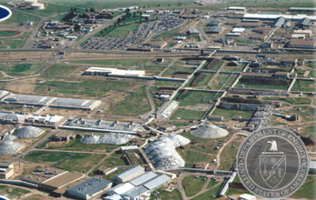
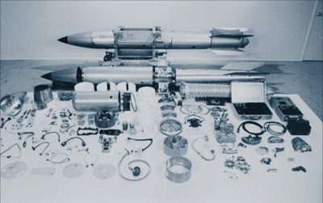
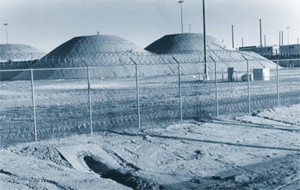
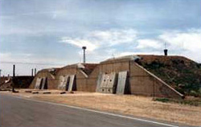
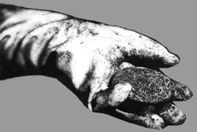

|  | The Pantex Plant's current functions include the fabrication of chemical high explosives; high-explosives development work in support of the design laboratories; and nuclear weapons assembly, disassembly, testing, quality assurance, repair, retirement, and disposal. The most significant aspect of Pantex's current operation is its role as the primary site for storage of weapons plutonium in the United States. Capacity was increased in the mid-90's, and by 1999 the number had doubled to 12,067 plutonium pits onsite (about 60 tons). The site is currently allowed to store up to 20,000 pits. |
Pantex Nuclear Weapons Plant
The Department of Energy's Pantex plant occupies 16,000 acres (25 square miles), 17 miles northeast of Amarillo, Texas, just outside of the small town Panhandle, north of U. S. Highway 60 in Carson County. The Pantex site was established in 1942 after forcing residents off of the land by power of eminent domain, and started by loading TNT and other explosives into conventional shells. In 1950, the site was selected for nuclear weapons work, and soon after granted a concurrent partnership with Texas Tech University. After extensive renovations were completed in 1952, the first assembly of nuclear bombs (Mk-6) soon occurred. Throughout the Cold War, components which had been fabricated across the nation at DOE labs were brought to Pantex to be assembled into the US stockpile of nuclear weapons. With the end of the Cold War, the DOE nuclear weapons complex shifted from weapons production to weapons dismantling and disarmament. The Department has said that the last new nuclear weapon (a W88 warhead) was assembled at the site on July 31, 1990. However, B-61 "bunker busters" for hardened targets, and other nuclear weapons have since been made out of the old as research and development continues for those weapons sought by the military and the Bush Administration. There is more on what that vision is later toward the end when we discuss the future of Pantex.
Plutonium pits, the spherical metal cores of thermonuclear weapons, are removed from the warheads and placed in stainless steel containers that resemble 55-gallon drums. These drums are stored in protective bunkers officially called "Modified Richmond Magazines" but also called "igloos." Other bunkers, called "gravel gerties," are used as work areas where the weapons are armed or disarmed with the plutonium pit. Before the mid 1990's, there were 18 bunkers at Pantex storing 6000 plutonium pits. In addition, over 33 tons of plutonium in other forms was stored, including processing residues and metal scrap. Under stakeholder protest, capacity was increased in the mid-90's, and by 1999 the number had doubled to 12,067 plutonium pits onsite (about 60 tons). The site is currently allowed to store up to 20,000 pits.
|  | At the top, an intact B-61 nuclear weapon. Below is a disassembled weapon of the same type. This weapon was later modified into the B61-B series, a predecessor to the modern B61-11 "bunker busters." The B61-11's major difference is that it adjusts to different altitudes and impact heights. Pantex also has assembled 8 weapon designs after 1995- cruise missles and W88 first designs to be reproduced. |
Faulty Environmental Assessment
The decision to expand Pantex raised very serious concerns about excess plutonium at the site, and a 1993 proposal for a national research lab to study new uses of plutonium. When the DOE released its 1992 Environmental Assessment on Interim Storage of Plutonium Components at the Pantex Nuclear Weapons facility, it met strong criticism from State agencies and officials, who called the study "fundamentally flawed", "deficient", and incomplete (Gov Richards, AG Morales). Roger Mulder, the governor's special projects director for environmental policy stated "We think they did not do their homework. I don't know anyone who realistically thinks we'll have a solution 10 years from now, and then the question becomes 'does Pantex become a de facto (storage) site'?"
Thomas Griffy, UT Austin physics professor, said "the environmental impacts of this decision need to be carefully assessed. One cannot judge from the document provided whether or not this has been done. (It) creates the impression of providing a detailed analysis while at the same time withholding some of the essential data on which those calculations are based. The report as it stands appears to be a full and open discussion of the problem when in fact it is not." Auburn L. Mitchell, Acting Associate Director for UT's Bureau of Economic Geology, responded to part of the EA concerning potential impacts upon the Ogallala aquifer. Addressing a hypothetical accident in which plutonium is released into the atmosphere, dispersed by wind, and deposited on the land, he questioned whether surface soils could be decontaminated to the level stated in the report considering the length of cleanup time. "The potential for soil and groundwater contamination at initial post accident levels during the cleanup period cannot be summarily excluded."
Site Contamination and Health Problems
Pantex has a history of contamination on and outside of the property. Until recently, the found contaminants were primarily chemical, not radioactive, since Pantex did nuclear assembly later on. With increased emphasis placed on handling plutonium and tritium, the possibility of radioactive contamination rose. When manufacturing conventional weapons, workers had used water lathes to shape blocks of explosive. The chemical wastewater drained into ditches or shallow lakes creating sludge with high concentrations of explosives. During the five decades since the plant was built, the EPA has documented gasoline spills, burning of explosives, and disposal of heavy metals in treated wastewater such as lead, arsenic, mercury and barium. This wastewater was used by farmers for irrigation. Uranium and tritium have also been found in low levels within a half mile of the plant. (a plutonium pit's design includes a small tube to insert the tritium/deuterium inside- seals break at this point and create a pathway out). Waste oils and solvents contaminated with high explosives were disposed of and allowed to percolate and evaporate in an unlined waste pit for 26 years. The total liquid waste disposed of in this pit was never recorded, and ranges between from 90,000 to 350,000 gallons of chemicals. For example, 3,000 gallons of the carcinogen toluene were disposed of in this manner in 1978. Boyd Deaver of the TNRCC stated, "It was a common practice for a long time to just burn things in the burn pits. They didn't know what they burned... what they released into the air. The bottom line was getting the bomb out, not the environment."
In May of 1994, the Pantex site was designated as a Superfund site. The governors office had opposed the move stating that another federal environmental law (RCRA) requiring sufficient cleanup standards was already enforced by DOE, EPA, and the State of Texas; that not only would superfund increase procedural requirements and drive up the cost to taxpayers, but the move "would threaten the state's ability to oversee and participate in the remediation." Tom Walton, Energy Department spokesman, spoke on behalf of the plant, saying "this could put a stigma on us... an undeserved stigma." Federal officials explained that since depleted uranium had been found near the site in trace amounts, RCRA, which does not regulate radioactive materials, would be insufficient, and that invoking CERCLA, the Superfund law, would be required to handle the situation. Beverly Gattis of STAND agreed. "The point is it is not a judgement call; it's based on evidence, and if evidence supports the (hazard ranking) scores, then sure I think it's fair and right that people should know that this is an important cleanup that needs to be done," she said. Don Hancock of the Southwest Research Institute added that "at a superfund site, there is regulatory authority over radionuclides, and there are cleanup standards that have to be met in terms of remediation or cleanup-type activities."
Also in 1994, unpublished Health Department statistics revealed that the rate of leukemia deaths in Carson County was more than twice the statewide average for the decade of 1981-1991. Death rates from brain cancer were slightly elevated in neighboring Potter and Randall Counties, and thyroid cancer death rates among Potter County women were higher than the rest of the state. Previously, the Health Department had conducted a small survey and concluded in 1992 that there was an overall lower rate of cancer in the area. However, after independent research done by Susan Lee using figures from the Texas Cancer Registry demonstrated the limited scope of the survey, the Health Department was forced to revisit the study and ended up confirming Susan Lee's findings. Dr. Steven Galson, chief medical officer in the DOE's Office of Environment, Safety, and Health, stated the numbers were "clearly alarming... They are high enough to raise anyone's eyebrows. Elevated cancer rates of that order of magnitude warrant further investigation as to the cause"
When the study was released, Jim and Jeri Osborne, who had been keeping track of their neighbor's cancer deaths, stated that 5 of the 7 farmers who irrigated their crops with treated sewage water from the plant had died of cancer, mostly with lymphomas. A sixth farmer had been battling cancer for the past five years. They also noted that five farmers who cultivated or harvested crops on the grounds of the plant had also died with cancers. "I am not trying to scare anyone", said Osborne, 56, who then chaired the county's republican party, "All I want to do is make them aware of what is going on." The Osborne's have kept a map of Carson County marked with colored pins, each representing the death of a cancer victim. At the time of this interview, the count was 235. They decided to start the project when two of their neighbors had died of cancer within the same week. Later, they noticed a pattern, with pins tending toward the north by northeast of the Pantex property.
Dorothy Bell, who resides in Armstrong County maintains a similar map for her own county, and shows 71 cancer victims. Her husband worked at Pantex from 1959 to 1989. He said he did not question plant operations until 1987, when he was directed to drill a uranium slug out of a vessel and was exposed to radioactive dust and fumes. Toxicologists were still treating him for a series of ailments which led to his retirement. Bell won a workers compensation award, which the plant had appealled. The couple has also filed a negligence suit against Pantex.
Later, in November of 1994, UT Austin's Bureau of Economic Geology announced that it had found traces of high explosive and nitrate contamination in the Ogallala aquifer 2 to 3 miles from the Amarillo water field, Amarillo's water supply. This included traces of TNT (trinitrotoluene), RDX (research developed explosives) and HMX (high-melting explosives). RDX is used as a rat poison and can damage the central nervous system. TNRCC officials stated that there was no readily available data of the health effects of these explosives in groundwater. State officials had speculated that an existing layer of clay would prevent seepage into the Ogallala. Mavis Belisle, director of the organization Peace Farm which monitors activity at Pantex, stated "Theres a forty to fifty year backlog of stuff that is not in the aquifer but is somewhere in between. We now know that it takes 50 years to get through that hard clay."
A year later in 1995, officials reported that several neighboring farms tested showed much higher concentrations of explosives in the water, as much as 57 parts per billion, about 10 times what is considered safe by drinking water standards. A well on the site perimeter showed levels of high explosives at 5000 parts per billion, or 1000 times higher than safe drinking water standards allow.
Plant Safety and Incidents
Just prior to the superfund designation, Pantex was forced to shutdown for several months to address safety concerns due to several incidents which had occured over the past few months. On February 2, warning lights on a radiation warning system failed due to previous software modifications to the fail-safe system. It was discovered that no records of the revisions to the software were ever required or maintained, so the direct cause of the malfunction was unclear. On February 24, an inspector found that a valve on an automatic water-deluge system, functional only when open, was left closed by a preventative maintenance team working on the fire-protection system. On March 19, a tritium gas alarm went off due to a malfunction. No radioactivity was found, but investigators recommended a full cause analysis because of "repetitive" alarm system deficiencies. On March 29, weapons technicians were locked in a disassembly bay when the automatic door system malfunctioned. One technician managed to escape through a cargo door. On April 4, failures in the air filtration system were discovered by a weekend maintenance crew. The crew failed to notify the technicians and work started normally the following Monday. It was later that afternoon that the failure was reported to plant personnel. During the subsequent investigation, it became clear that three months of preventative maintenance records had been wiped out in a "computer glitch". The problem with the air filtration systems was similar to an occurence in February, when an investigator for the Defense Nuclear Facilities Safety Board (DNFSB) observed workers taking apart an 8-inch artillery-fired nuclear warhead in a building with an inoperatable filtration system. John Conway, chairman of the DNFSB, stated that "particularly disturbing is the observation that operating personnel were not trained or knowledgeable of the safety envelope or the critical systems."
A congressional source involved in oversight at Pantex said that one of the major problems is the preventative maintenance program and a lack of reliable records for safety systems. "if something like this happened at a commercial nuclear facility," he said, "you'd see fines and penalties immediately. It was a serious gap here."
|  | "Gravel gerties" is a name for circular rooms 33 feet in diameter capped with 17 feet of sand and gravel. This gravel is held up with a lattice of cabling and chain-link fence. Supposedly, this is to be sufficient to absorb the power of an accidental detonation of the conventional explosive components. The logic is that the roof would collapse and trap gasified plutonium in the rubble. A study by the DOE Plutonium Vulnerability Working Group concluded that the storage containers used to store pits do not provide an effective containment barrier, and that the effects of aging on the pits, such as corrosion and cracking, are unknown. |
In July 1994, Dallas Morning News reported that the gravel gerties had gaps measuring up to 3/4 of an inch on the steel doors that could lead to radioactive releases, and that they were first identified as a safety concern in a "secret appendix" to a 1983 Environmental Impact Statement. It was found that these gaps occured due to repeated opening and closing of the doors, and that negative pressurization did not help sufficiently since the gaps were too large. As strange as not having already fixed the problem, it was after a 1996 environmental survey team report restated the problem that Pantex finally started filling these leaks, 12 years later. "It's like having a hole, a square-foot in the wall, through which some of the airborne plutonium would blow," said physicist Frank von Hippel, former assistant director for national security in the White House Office of Science and Technology Policy. Airborne plutonium spreading within a 1.6 kilometer radius would increase the risk of cancer death by 25%, he said. The Fort Worth Star-Telegram reported that a written statement from Mason & Hanger claimed the leaks "were not sealed sooner because the plant chose to stress accident prevention instead."
As of 2005, the gravel gerties made news again when it was reported that the sealant around the doors was peeling. AP reported that according to a July 21 report by the Defense Nuclear Facilities Safety Board, a 6-year-old work order to repair the faulty door welds was never completed, and that it would cost another $20 million to address the problem. During Pantex's safety review, other structural cracks were also found which would also have to be addressed.
Other questions about the safety of the gravel gerties and bunkers were raised. Pantex and the DOE often referred to the bunkers as high-tech, failsafe chambers which keep airborne radiation from scattering in an accidental explosion. The leaks around the blast doors were not only a concern over releases during plant procedures, but also the containment concern in the event of an explosion. Chances of an explosion of a gravel gertie are claimed by federal officials to be remote, but as Beverly Gattis explains, "you are always caught in the boggle that 'this isn't likely to happen,' still, 12 years is a long time to ignore something that has the potential for harm. It seems astonishing that 12 years and millions of dollars later that this still is not fixed."
|  | A majority of plutonium pits were stored in Zone 4 "bunkers" which are about 35-50 years old, and weren't designed for long-term storage or to withstand an airplane crash. The DOE promised that interim storage in these buildings would last only 6-10 years, and interim storage at Pantex was projected to be at least 50 years. Zone 4 was also in a flightpath, posing the risk of an severe accident. Based on an assumption that two new bunkers would be available in Zone 12, the DOE promised to move the pits to the improved bunkers. |
The bunkers in Zone 12 proved to be less than suitable for the task. During the construction and upgrading of the buildings, cost cutting had gone so far as remove environmental/humidity control equipment from the plans. This equipment is particularly crucial considering that the pit containers require a strict humidity controlled environment. The DNFSB concluded, "this decision was made at some risk, because strategic pits are unlikely to be repackaged soon in sealed containers."
One of the Zone 12 buildings, 12-116, was to hold 4000 "strategic" pits. These pits were scheduled to remain in long-term storage at Pantex even if DOE had another disposition for surplus plutonium. The other 12,546 surplus plutonium pits were destined for Building 12-66, which was soon later assessed to not be able to stand a crash from a small commercial helicopter. The DOE decided to instead to increase the number of Zone 4 magazines with active cooling. There was no mention of adding humidity controls for the AL-R8 containers. Pantex is 8.5 miles from the Amarillo National Airport, where in addition, the Department of Defense continues to conduct Air Force training flights over the bunkers.
In 1996, whistleblower complaints had led to an investigation by the Government Accountability Project, who interviewed several dozen Pantex employees about safety concerns and found that "the kinds of things we are hearing is that it's not ok for a worker at Pantex to raise a safety and health or environmental allegation- or talk to anybody- to talk to the DOE or to GAP... is going to be career-threatening, that there will be reprisal against you." A DOE investigation into a previous complaint noted that two workers were reluctant to raise safety issues with supervisors.
Dan Fairfax, a 44-year-old former Pantex employee, had charged in a 1993 complaint that plant officials retaliated against him for reporting alleged nuclear safety violations. Along with other safety concerns, he reported that in March 1993, he was present in an assembly cell where weapons work was being done; that workers were not wearing required protective clothing while removing high explosives from a plutonium pit. He was not properly informed by his escort that a radiation work permit (required posted guidelines for working in a radiologically-controlled area) was posted for the cell, and stood by a plutonium pit for about five minutes before he was told that it was special nuclear material. The DOE Office of Nuclear Safety Enforcement investigated, and reported that the "problems he raise either lacked safety significance or were ongoing issues known to the DOE." The report refuted nearly all of the allegations reported by Fairfax, yet recommended corrective measures for some of the safety issues he had raised. Fairfax said investigators detailed his concerns, but downplayed his allegations. Fairfax was soon afterward given an unsatisfactory job review for reporting safety hazards, was threatened with firing, and offered a transfer to another job at Pantex. "If you read the executive summary, it just whitewashes everything," said Fairfax, "I got screwed and tattooed because I raised nuclear safety issues."
Plutonium Storage and National Security
The largest issue with storing plutonium is security. It is virtually impossible to "immobilize" plutonium, (to place it in an unrecoverable state), to ensure that disarmament is permanent, and that the plutonium is not reused by "rogue governments" or terrorists. For the atomic bomb at Nagasaki, only 14 pounds of plutonium was utilized. Just 6 to 10 pounds is enough to build a nuclear weapon.
|  | The prefered method of immobilizing plutonium is a process called vitrification. This involves placing plutonium (which is in puck form) in a downward spiral arrangement, and surrounding the material in radioactive glass (often cesium-137 based). The spiral arrangement ensures that the plutonium pucks have some distance from each other and do not form a critical mass. Smaller canisters like this are placed in a similar spiral arrangement and "glassified" in the same manner, creating large logs. Vitrification has also been seen as a means of mobilizing uranium-235. Unfortunately, vitrification is sometimes seen as too expensive despite its security advantages, although no alternative exists at this time. |
Plutonium at Pantex is not handled in a such a responsibly elaborate manner as vitrification promises. Plutonium pits are already clad in either beryllium or stainless-steel, which keeps the plutonium from being exposed to air, oxidizing into a powder, and becoming a very dangerous inhalation hazard. However, this cladding is deteriorating, and in 1994, DOE's Plutonium Vulnerability Assessment Team cited reliance upon cladding as the most significant vulnerability at Pantex.
Pantex also came under fire for storing plutonium in deteriorating substandard cases called AL-R8 containers, which are known to "contribute to rather than mitigate" pit corrosion. These unsealed containers themselves are corroded and failing- procured without "required corrosion-resistant coating on the inner surface." Over 2,000 containers had corroded according to a Sandia Labs memo. The Nat'l Academy of Sciences had stated in 1994 that storage at pantex "could be continued for the next few decades without undue risk, provided that an adequate program to monitor the pits' status and respond to any problems was maintained." Pantex inspected its 10,000+ pits at a rate of 30 pits a year, and the DNFSB recommends 100% inspection every five years for AL-R8 packaged pits. This demonstrates that the DOE can't state with any confidence whether or not the pits are safe.
The solution the DOE promised was to utilize another container, the AT-400A, but due to repeated technical difficulties and cost it was determined to be ineffective. Internal memos on the topic emphasize that "cheap prevails," and the program to replace the AL-R8 was labeled by DOE the "cheap container" program.
Mixed-Oxide Fuel Production (MOx)
Plutonium is also seen as a component element of Mixed Oxide (MOx) fuel fabrication. The plutonium metal is converted to plutonium oxide powder, which is mixed with uranuim oxide powder, refined, and then pressed into MOx pellets. MOx fuel burns much faster and hotter than uranium fuel, and is extremely dangerous to use in a reactor. Fast-flux reactors designed for the use of MOx fuels have been in the experimental phases, and have not proved to be economically viable or safe from fires. It has been estimated that if Pantex becomes involved in MOx fuel fabrication, it will annually produce over 300 cubic meters of transuranic waste, over 150 cubic meters of low-level radioactive waste, and over 80 cubic meters of mixed low-level radioactive waste, in addition to releasing 1,000 micrograms of plutonium in air emmissions. Ingestion or inhalation of as little as 30-60 micrograms of these dusts is an enormous cancer risk (a packet of sugar or sugar substitute contains about one million micrograms).
The Future of Nuclear Weapons and Pantex
It is unclear how long plutonium will remain stored at Pantex. Several actions have taken place since 2001 which have turned back the clock, literally, on nuclear weapons disarmament in the United States.
- Commercial Reactors Producing Tritium
Within a month of the attacks on September 11th, the Bush Administration advanced a Clinton plan to use one or more commercial nuclear plant reactors in Tennessee to produce tritium. Watts Bar is designated as the first to begin. It would be the first time that the US has made civilian nuclear plants part of the vast complex that produces and maintains the nuclear arsenal. Previously, the United States encouraged other countries to follow the American example and not combine civilian nuclear energy and nuclear weapons programs.
"They might just say that if the United States is doing this, then the nuclear nonproliferation treaty is history," stated physicist Kenneth Bergeron, who spent 25 years at the Sandia National Laboratories in Albuquerque, N.M., researching reactor safety and tritium production. Tritium in existing nuclear weapons decays and becomes ineffective to multiply the fission reaction of the plutonium in the weapon. However, DOE officials have previously stated that the US nuclear stockpile would not need another tritium boost until 2011
- The Nuclear Posture Review
In 2001, the National Defense Authorization Act had been passed, and by February 2002, The Nuclear Posture Review which it mandated was submitted to congress, outlining a 12 year strategy with regard to the nuclear weapons stockpile. It states that an increase in the US nuclear weapons stockpile is imminent, and plans the specific development of subkiloton "mini-nukes" for deployment in addition to modernization of larger yield weapons. This also ensures that Pantex will be going back into production mode.
- "Doomsday Clock" Updated To Indicate More Serious Threat of Nuclear War
February 27, 2002, the Board of Directors of the Bulletin of the Atomic Scientists moves the minute hand of the "Doomsday Clock," the symbol of nuclear danger, from nine to seven minutes to midnight, the same setting at which the clock had its debut 55 years ago. Since the end of the Cold War in 1991, this is the third time the hand has moved forward. Reasons cited for the current change include the US abandoning the ABM treaty and planning to manufacture more nuclear weapons, and the tensions between India and Pakistan.
- 2002 US-Russia Disarmament Treaty Fails to Mandate Plutonium Immobilization
In 2002, President Bush signed a disarmament treaty with Russia which actually enabled the US to not have to destroy weapons, but to merely store them ensuring that nuclear stockpiling would not be hindered. This does NOT mean that the plutonium will be immobilized or vitrified, and DOES mean that plutonium storage at Pantex will continue.
- US Restarting Plutonium Pit Production
In June 2002, DOE announced plans to resume production of plutonium pits. This decision was made after reviewing a Bush Administration study declaring the US stockpile insufficient to pose a nuclear deterrent. The department halted production of pits in 1989. The National Nuclear Security Administration stated that a new facility costing between $2.2- $4.4 billion would be built at an existing DOE site. It was not stated which site would host the facility, but it is strongly being currently considered for either Pantex, WIPP, or Savannah River.
Refering to the refurbishing of existing pits which are in storage at Pantex, the department had stated that the tons already in storage "cannot meet long-term needs." What this means for Pantex is obviously more weapons production operations, with or without it becoming a pit production site. The current US nuclear weapons policy guarantees a reverse in Pantex's mission from decommissioning back to building thermonuclear bombs as during the cold war.
[12th Annual Report to Congress, FY 1998 Progress in Implementing Section 120 of CERCLA. US DOE, Office of Environmental Management. April, 2000]
["Plutonium Pit Storage: Environmental Assessment 'Flawed'," by Doris Smith, Austin Peace and Justice News, June 1993.]
["Pantex Pitches Plutonium Storage", by Kerry Haglund, The Texas Observer, Nov. 26, 1993.]
["DOE Assesses Dangers From Its Plutonium Inventory", by Bret Leslie, Science for Democratic Action, Vol. 3 No. 2, Spring 1994.]
["Safety Failures Halt Pantex Arms Disposal", by Jackie Koszczuk, Ft. Worth Star-Telegram, May 26, 1994.]
["State Fights Pantex Superfund Designation", by Jim McBride, Amarillo Daily News, May 27, 1994]
["EPA adds Pantex to Superfund List", by Jim McBride, Amarillo Daily News, May 28, 1994]
["Pantex Designated Priority Cleanup Site", by Hollace Weiner, Ft. Worth Star-Telegram, June 1, 1994.]
["Pantex Faces New Test", by Jackie Koszczuk, Ft. Worth Star-Telegram, June 4, 1994.]
["Cancer Deaths Near Pantex High, State Study Says", by Hollace Weiner, NYT News Service, June 12, 1994.]
["Cancer Rates Reported High Near Pantex", by Hollace Weiner, Dallas Morning News, June 13, 1994.]
["Uneasy Neighbors", by Hollace Weiner, Ft. Worth Star-Telegram, June 12, 1994.]
["Pantex Nuclear Weapons Plant Has Weaknesses, Inspectors Say", by Kerry Haglund, Dallas Morning News, July 21, 1994.]
["Leukemia Rates Slightly Higher Around Pantex Plant", Odessa-American, August 6, 1994.]
["Pantex Pollutants Reach Aquifer", by Hollace Weiner, Ft. Worth Star-Telegram, November 1, 1994.]
["Pollution From Pantex Found on Nearby Farms", by Hollace Weiner, Ft. Worth Star-Telegram, December 1995.]
["Pantex Workers Begin Filling Gaps in Blast Doors...", by Hollace Weiner, Ft. Worth Star-Telegram, January 20, 1996.]
["Group Eyes Complaints at Pantex", by Jim McBride, Amarillo Daily News, January 13, 1996.]
["Pantex Plutonium Pit Storage: A Substandard, Cheap Safety Program", by Don Moniak, The Nuclear Examiner, February, 1998.]
[Pantex Plant: General Description, official website, http://www.pantex.com/ds/pxgeng.htm, Dec. 2001]
["Water: An Irreplacable Resource", Panhandle Area Neighbors and Landowners, unknown date]
Properties of Plutonium
| Plutonium Isotope: | Pu-238 | Pu-239 | Pu-240 | Pu-241 | Pu-242 |
| Half-life (in years): | 87.74 | 24,110 | 6,537 | 14.4 | 376,000 |
| Activity (Ci/g): | 17.3 | 0.063 | 0.23 | 104 | 0.004 |
| Principal Decay Mode: | Alpha | Alpha | Alpha | Beta | Alpha |
| Decay Energy (MeV): | 5.593 | 5.244 | 5.255 | 0.021 | 4.983 |
| Radiological Hazards: | Alpha, weak gamma | Alpha, weak gamma | Alpha, weak gamma | Alpha, weak gamma | Alpha, weak gamma |
| How Produced?: | nuclear reactors | nuclear reactors | nuclear reactors | nuclear reactors | nuclear reactors |
| Main uses: | Production of thermoelectric power in weapons, satellites, and pacemakers | Fissile material for nuclear weapons and energy production | none- is fissile | none- is fissile | none- is fissile |
Other Internet Resources on Pantex
For more information on Pantex and nuclear weapons, please visit the following websites:
(Please also see the section of Texas Radiation Online devoted to fission)
• STAND- Serious Texans Against Nuclear Dumping
• Nuclear Age Peace Foundation - NuclearFiles.org
• Institute for Energy and Environmental Research
• Nuclear Information Resource Service
• Official BWXT Pantex website (also see BWXT homepage)
 |
|